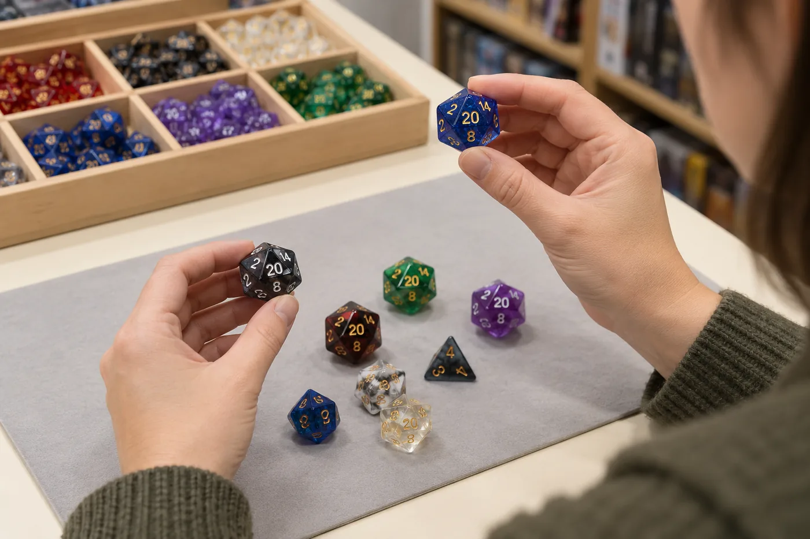

For a game store, “readable D&D dice” is not just a color trend or a product-photo style. It is a buying question: can a customer identify the die, read the result under the conditions where they play, handle the set comfortably, and understand what the product does before buying it? The answer depends on the person, the specific dice, the lighting, and the table. A store therefore needs a repeatable way to inspect samples, ask useful supplier questions, and write accurate shelf copy.
There is a timely reason to make that review. On October 2, 2026, D&D Beyond published an announcement about a new Disability Pride Dice Set made with Sirius. The article describes choices including larger numerals, distinctive colors, OpenDyslexic type, an arch-style d4, packaging designed to be easier to open, and a digital counterpart. The same announcement explicitly acknowledges that one set cannot address every barrier a disabled player may face. That is a useful product-development signal, not evidence that every game store needs to stock the same set or that one feature works for all customers.
This buyer checklist turns that signal into an actionable store process. It is intentionally narrower than our accessible D&D dice design guide, which explains design considerations for players and creators. Here the focus is evaluation: what to look for in a sample, how to test it fairly, what to ask a supplier, and how to merchandise the product without overstating its benefits.
What should a game store check first?
For inventory planning, treat readable or high-contrast RPG dice as a distinct product proposition rather than a replacement for a standard assortment. Start with the customer need you have heard, a clearly defined sample-review process, and a test quantity that fits your normal inventory risk. Our bulk D&D dice buying guide for game stores covers the broader decisions around assortment, samples, MOQ, packaging, and reorders.
Why game-store buyers are evaluating readable dice
The best current evidence is not a market-size forecast; it is a combination of a concrete product release and longstanding accessibility guidance. The October 2026 D&D Beyond announcement brings several design ideas into mainstream hobby conversation. It is useful for buyers because it names specific choices that can be inspected on a sample: numeral size and type, color distinction, a different d4 form, packaging, and a digital option. It does not publish sales data that would establish demand across all stores, nor does it make the set a universal solution.
Research and library guidance provide a broader lens. The American Library Association’s Games and Gaming Round Table guide discusses contrast, font complexity and size, tactility, color dependence, and non-standard dice as separate considerations. A 2022 study by Bolesnikov, Kang, and Girouard interviewed 15 blind and low-vision tabletop players about their experiences with board and card games. The paper describes a range of barriers and experiences rather than a one-size-fits-all preference. For a retailer, the practical lesson is simple: observe tasks and ask users; do not infer a person’s needs from a diagnosis or assume one visual feature solves every problem.
A specialist example is the DOTS RPG Project, which develops Braille polyhedral dice with consistent tactile faces and an orientation cue. Its approach is different from making standard dice numerals larger or increasing color contrast. That distinction matters. A store that receives questions about tactile dice should research products purpose-built for tactile use rather than assuming that a standard visual dice set with added decoration will meet the same need.
What “readable D&D dice” should mean in a buying brief
“Readable” is a useful search phrase, but it is too broad to serve as a final specification. Turn it into observable requirements. For example: “The numbers should be distinguishable from a seated position across a 30-inch table under our warm LED lighting.” That is a test condition, not a universal accessibility claim. A different customer may prioritize tactile identification, low-glare finish, larger faces, a different shape, simplified orientation, or a digital alternative.
Separate the product’s features from its outcomes. A buyer can verify that a sample uses a large numeral, a contrasting fill, or a matte finish. A buyer cannot assume from those features alone that every low-vision, dyslexic, color-blind, blind, or motor-disabled player will find it easy to use. Product copy should describe the actual feature and, when useful, its intended task. It should avoid a promise that the product is “accessible to everyone,” “universally readable,” or suitable for a particular disability unless the claim has appropriate evidence and review.
Also distinguish visual readability from tactile access. High contrast is a visual design choice. Braille, raised numbers, and tactile orientation marks require touch-based interpretation and consistent geometry. Digital dice can provide another route but may introduce device, interface, or cognitive demands of their own. Choice is often more useful than insisting that one physical product must work identically for every person.
Seven checks for a readable RPG dice sample
Use the same checklist for each candidate SKU. Record the conditions and observations so that a dramatic product photo or a particularly attractive colorway does not substitute for a useful comparison.
1. Numeral shape, size, and orientation
Read every face, not only the d20’s most photogenic number. Check whether digits are large enough on the smallest die in the set, whether their strokes remain clear when molded or filled, and whether pairs such as 6 and 9 are easy for testers to distinguish. Look at numbers from the angles people actually see after a roll. A typeface that looks clear on a large digital proof may close up once reduced to the die face. Ask the supplier for the actual sample size and final artwork, not just a rendering.
2. Contrast and color-independent cues
Check the numeral against the die body, then check the die against a typical play surface. Strong contrast can help some customers, but two dice differentiated only by hue may be hard to tell apart for some people or under poor lighting. If color identifies a die type, add a second cue where the product design allows it, such as a clear label or a consistent shape distinction. Do not promise color accessibility based on a product image viewed on one calibrated screen.
3. Glare, finish, and real store lighting
Move the die beneath your store’s overhead lights and observe it from more than one seat. Glossy resin can look beautiful in photos yet reflect a ceiling light across a numeral. Dark fills may disappear in a dim game room; pale fills can be difficult against a light body. Test the sample on a light and a dark surface, under the warmest common lighting in the store, and with daylight if customers play near windows. A phone photo can help document an issue, but it cannot replace the direct viewing test.
4. Reading a result after a normal roll
Ask testers to roll the die as they normally would, locate the result, and read it without a prompt. Watch for faces that settle close to an edge, numerals that become ambiguous at an angle, or a shape that is hard to retrieve. A custom d4 design, for example, may change visibility and pickup; it should be checked for the intended use rather than accepted because the product page calls it easier. Do not infer randomization quality from one demonstration roll. If fairness matters to your assortment, request the supplier’s relevant quality information separately.
5. Grip, weight, and pickup
Test a single die and a full set. Can the intended users pick up the dice from the table, separate them from a tray, and hold them comfortably? Larger dice may improve visual access for some people while making the set heavier or harder to grip for others. Metal dice have a different weight and feel than resin. A dice tower or rolling tray may help some game setups, but it will not address every handling concern. Ask users what feels comfortable instead of making assumptions based on appearance.

6. Packaging, labeling, and instructions
The customer’s experience starts before the first roll. Check whether the package is easy to locate and open, whether dice can be returned to storage, and whether the printed product information is readable at its final size. Review whether a customer can tell which set they are picking up without relying only on color. Packaging can also communicate limitations clearly: for example, a set may use high-contrast numerals without including tactile numbers. If you plan private-label packaging, include it in the sample discussion; compare formats in our custom dice packaging guide.
7. Set consistency and sample-to-production match
Look at every die in the set for consistent numeral placement, fill, finish, and edge quality. If the readability feature is the reason you selected the SKU, it should appear consistently across the seven-piece set, not just on the d20. Ask how the approved sample relates to bulk production, what the supplier checks during inspection, and how a changed color, ink, mold, or finish affects repeatability. If the first sample is a standard item and the production order is customized, insist on reviewing the customized pre-production sample before approving a bulk run.
A practical test plan for a game store
You do not need a laboratory to make a more disciplined purchasing decision. You do need transparency about what your test can and cannot establish. A store evaluation is an informal product review, not a certification or representative study of all players.
- Write the intended use. State whether the candidate is meant to make numbers easier to distinguish, provide color-independent identification, improve handling, or offer a tactile reading method. Do not combine unrelated goals into a vague “accessible dice” label.
- Invite voluntary feedback. Ask customers or local players with relevant experience if they want to review the sample. Explain what you are testing, compensate their time where possible, and do not ask for a diagnosis or make participation a condition of service.
- Set a consistent test environment. Use your regular table, standard store lighting, and a typical sitting distance. Let testers examine dice at their own pace. If you compare two samples, keep the task and lighting consistent and rotate which sample is tested first.
- Observe the task, then ask open questions. Ask the tester to identify a die, read a rolled face, or open its package. Avoid prompting the answer. Then ask what was easy, what took effort, what they would change, and whether they would personally choose this option. Do not pressure someone to justify a preference.
- Record observations without overgeneralizing. Note sample ID, lighting, viewing distance, material, finish, task, and individual feedback. A small number of comments can reveal a design issue, but it cannot prove the product works for a whole disability group.
- Make a controlled first buy. Test a manageable quantity and keep its SKU, landed cost, margin, and starting stock identifiable. Track sales, returns, and customer questions separately. Compare sell-through over a period that makes sense for your store rather than treating a few days as a category verdict.
A simple internal scorecard can make comparisons easier: numeral clarity; contrast under store lights; glare; result orientation; pickup and handling; package access; consistency across dice; and tester preference. Use a scale defined by your team, such as “needs work / acceptable for our stated use / preferred,” and keep the written observations beside the score. A numeric score is a local decision aid only, not an accessibility rating.
Questions to ask a dice supplier
A good supplier conversation should connect the product brief to a reproducible sample and a realistic order. For a standard SKU, ask what is fixed and what can be customized. For custom readable D&D dice, share the target die type, proposed numeral artwork, contrast or non-color cue, material, finish, package, destination country, quantity range, and the user-testing plan. Then ask:
- Can you provide a physical sample of the exact design, material, finish, and numeral fill being considered?
- Will the pre-production sample match the approved artwork and production method?
- Which design changes require new tooling, a different process, or additional feasibility review?
- How are numeral fill, finish, and set consistency checked across the full assortment?
- What are the MOQ, sample cost, packaging assumptions, production timing, and shipping terms for this exact specification?
- Can you provide accessible product information or alternative packaging copy, and what limitations should it disclose?
- Which claims about legibility, tactile use, or accessibility have been tested, by whom, and under what conditions?
Do not assume that a supplier supports Braille, raised numerals, an arch-style d4, a particular font, or a specific low-glare coating unless the factory confirms it in writing and the feature appears on a sample. A visual mockup is not evidence of production feasibility. Review the process described on our game store dice supplier page, and use the custom dice sample kit to compare available materials and finishes. A standard kit helps with general sourcing; it does not validate an untested accessibility feature or replace a custom pre-production sample.
How to merchandise readable dice without overclaiming
Make the shelf label specific. “Large, high-contrast numerals” is more informative than “accessible for everyone,” if that description accurately matches the product. “Braille-numbered polyhedral dice with tactile orientation cues” is more precise than “dice for the blind,” if the product really has those features and the claims are supported by the maker. State what is included, what is not included, and whether an alternative digital method exists.
Where shelf space allows, offer choices rather than making one set the only recommended option. A store might place a readable numeral set beside standard polyhedral dice, magnification or lighting aids where appropriate, tactile specialist products, or a sign pointing to digital dice. Staff should be able to describe features neutrally and let customers decide. Do not ask customers to disclose a disability to access a product or receive ordinary assistance.
For a first assortment test, pick a small number of clearly differentiated SKUs rather than ordering many nearly identical colorways. Include the product in a real dice display, train staff on the verified features, and note which questions customers ask. Track sales and feedback separately: interest in a feature does not always become a purchase, and low sales may reflect discovery, price, or presentation rather than lack of need. Reorder based on your local records. For custom branding or a store-exclusive set, our custom RPG dice overview explains the broader project inputs to prepare.
Copyable buyer checklist
- We can explain the specific customer task this product is intended to support.
- We reviewed a physical sample under our normal lighting and at normal table distance.
- We inspected every die for clear numerals, orientation, contrast, glare, and consistency.
- We considered handling, pickup, rolling, storage, labels, and package opening.
- We invited voluntary feedback from people with relevant lived experience and recorded its limits.
- The supplier confirmed the exact specification, sample-to-production match, MOQ, packaging, timing, and quality checks.
- Our shelf copy names verified features and avoids universal or medical claims.
- We have a small-order and reorder plan based on our own stock and customer evidence.
If you are preparing a custom dice brief, include your target player task, artwork, die sizes, number style, colors, finish, package, sample requirements, quantity range, and destination. You can send the specification for a sourcing discussion; any accessibility-related feature should be confirmed individually before it is treated as a production capability.
Readable D&D dice FAQ
What should a game store check when buying readable D&D dice?
Review numeral clarity at table distance, contrast under store lighting, glare, identification without color alone, handling, roll behavior, packaging access, and consistency across the set. Ask intended users to test physical samples and confirm that production will match the approved sample.
Are high-contrast dice accessible to everyone?
No. Contrast can help some people read dice, but it does not cover every visual, tactile, cognitive, or motor access need. Describe verified features, offer choices where possible, and avoid universal claims.
Should retailers stock Braille RPG dice?
Consider specialist tactile dice when they fit your customers and can be sourced from a maker with relevant design and testing experience. Braille is not read by every blind or low-vision person, so describe the specific product rather than treating it as a universal substitute.
How can a retailer test a new readable dice SKU?
Review a physical sample under consistent store conditions, invite voluntary user feedback, record sales and questions separately, and begin with a quantity that fits your own inventory risk. Use local results to guide reorders.
What should a dice supplier confirm before a custom order?
Confirm the exact numeral artwork, materials, finish, sample-to-production match, feature feasibility, MOQ, packaging, inspection, lead time, and shipping assumptions. Ask which accessibility-related claims have been tested and under what conditions.
Sources
- D&D Beyond: “How the New Sirius D&D Disability Pride Dice Make Gaming Accessible for All Players” (October 2, 2026). Official announcement and description of the set’s stated design choices and limitations.
- American Library Association, Games and Gaming Round Table: “Accessibility and Boardgames”, a guide by Dr. Michael Heron discussing contrast, font complexity and size, tactility, color dependence, and non-standard dice.
- Bolesnikov, Kang, and Girouard: “Understanding Tabletop Games Accessibility: Exploring Board and Card Gaming Experiences of People who are Blind and Low Vision”, Proceedings of TEI ’22 (2022), DOI: 10.1145/3490149.3501327.
- DOTS RPG Project: Braille RPG Dice, a specialist project describing tactile dice design and orientation cues.
The product facts above are attributed to their publishers. The evaluation checklist and retail recommendations are editorial guidance, not an industry certification, sales forecast, or guarantee of accessibility.
Planning a readable custom dice sample?
Send the target use, die format, numeral artwork, material, finish, package, quantity range, and destination. We can review the sourcing brief and confirm which requested features need factory feasibility checks before sample or production commitments.
Final takeaway
For game-store buyers, readable D&D dice are best evaluated through a clear brief, a real sample, and feedback from the people the product is meant to serve. Check numerals, contrast, light, handling, packaging, and consistency; ask the supplier to confirm what can actually be reproduced; and describe only verified features on the shelf. A thoughtful test order can help your store offer more useful choices without turning one product into a universal promise.